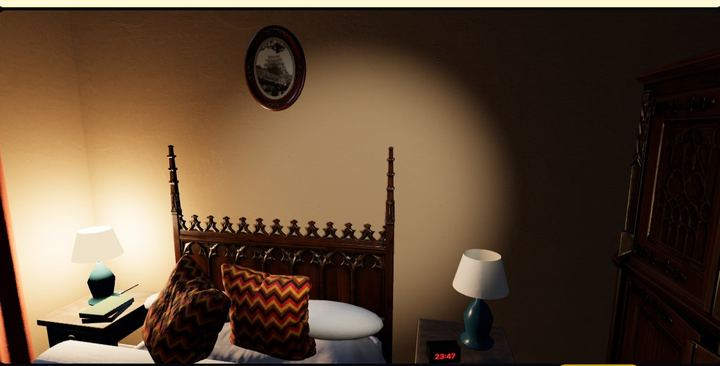
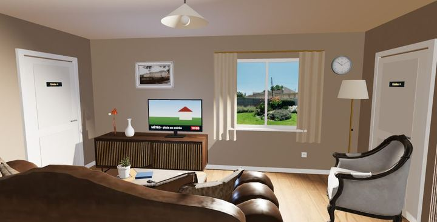
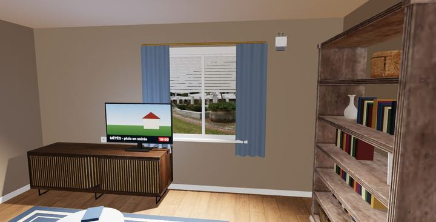
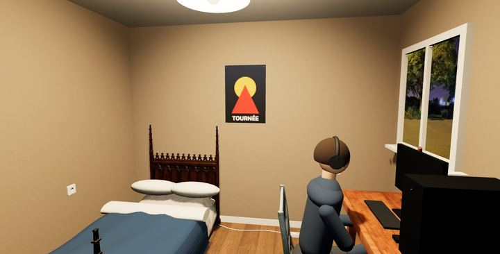
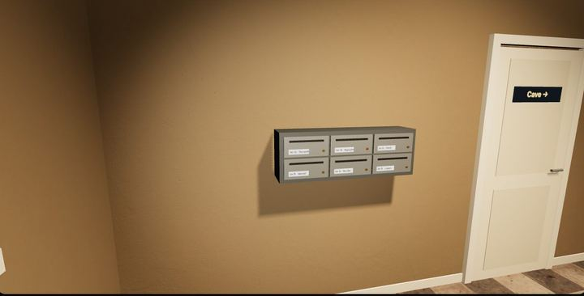
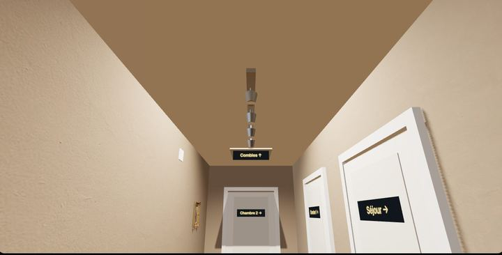

Atelier dépannage électrique en 3D
Un client t'appelle, tu entres chez lui avec ta caisse à outils. Tu l'écoutes, tu te déplaces dans le logement, tu ouvres le tableau et les appareils, tu mesures, tu trouves la panne et tu répares. Les dépannages sont rangés du plus simple au plus difficile.
-

Niveau 1 · Pour commencer, guidé pas à pas
La lumière de la chambre
Mme Martin · une maison, la nuit, sous la pluie
Le plafonnier de la chambre ne s'allume plus.
Tu apprends la méthode du dépanneur : questionner, observer, couper, vérifier l'absence de tension, mesurer, réparer, essayer.
Commencer → -

Niveau 2 · Intermédiaire
Ça saute la nuit
Mme Roux · une maison de plain-pied avec jardin
Au petit matin, la moitié de la maison est sans courant, surtout quand il pleut.
Tu apprends à chercher un défaut d'isolement : dispositif différentiel 30 mA, recherche circuit par circuit, mesure d'isolement.
Commencer → -

Niveau 3 · Intermédiaire
La moitié de l'appartement est morte
M. Haddad · un trois-pièces dans un immeuble des années 70
Plus de lumière dans le couloir ni dans la chambre du fond, et pourtant rien n'a sauté.
Tu apprends à suivre un circuit sans plan et à trouver une coupure : VAT, mesure de continuité, boîte de dérivation.
Commencer → -

Niveau 4 · Confirmé
Le disjoncteur saute tous les soirs
Les Morel · un pavillon à étage, deux adolescents
Le disjoncteur des chambres déclenche chaque soir, et le client veut « mettre plus gros ».
Tu apprends à distinguer une surcharge d'un court-circuit avec la pince ampèremétrique.
Commencer → -

Niveau 5 · Confirmé
La lumière de l'escalier ne s'éteint plus
Mme Costa, du syndic · un immeuble de trois étages
L'éclairage de la cage d'escalier reste allumé jour et nuit depuis le passage des peintres.
Tu apprends à dépanner une minuterie d'escalier et ses boutons-poussoirs.
Commencer → -

Niveau 6 · Expert
Ça saute dès que j'allume le couloir
M. Girard · une maison qu'il rénove lui-même
Depuis la pose de spots dans le couloir, un différentiel déclenche, tantôt l'un, tantôt l'autre.
Tu apprends à trouver une erreur de câblage entre deux dispositifs différentiels.
Commencer →
Comment on joue
- Glisse le doigt (ou la souris) pour tourner la tête, touche un objet pour t'en approcher ou agir dessus.
- Prends un appareil dans la caisse à outils, puis touche les deux points à mesurer.
- Quand tu as trouvé la cause, tu la dis, puis tu prends le tournevis et tu vas réparer sur place.
- Le niveau 1 te guide étape par étape. À partir du niveau 2, tu cherches seul : la cause change à chaque partie, un carnet note ce que tu constates et un indice reste disponible.
- Les fautes de sécurité comptent : on coupe, puis on vérifie l'absence de tension avant de toucher.
Chaque geste s'appuie sur les cours : consignation et vérification d'absence de tension, protection des personnes, le circuit électrique. Pour câbler toi-même les montages d'éclairage, passe à l'atelier schémas.